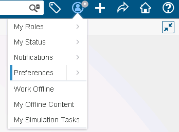
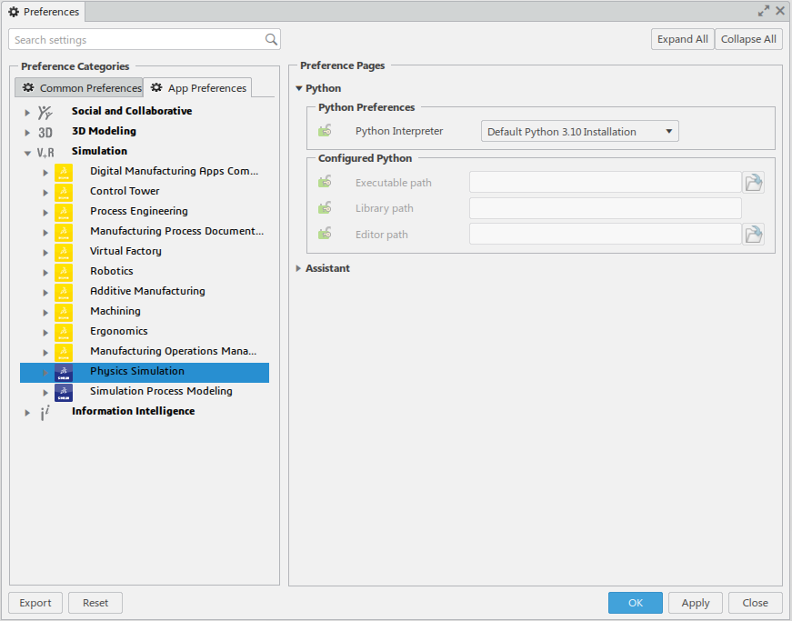
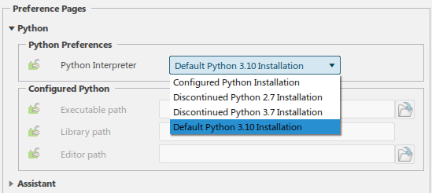
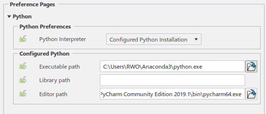

|
|||||||||||||||
Create a .py file and edit it with any editor, and write in it the following script.
Accessing the CATIA application object, and the ENUM object for all enumeration constants.
from com3dx import * CATIA = get3dxClient() ENUM = win32com.client.constants ...
Retrieving the active simulation and its product.
As a first step, retrieve the active editor.
... myEditor = CATIA.ActiveEditor ...
Then retrieve the product service.
...
myProdService = myEditor.GetService("PLMProductService")
...
Retrieve the PLMEntities collection object.
... myEntities = myProdService.EditedContent ...
Now retrieve the PLMEntity.
... myEntity = myEntities.Item(1) ...
Get the simulation Root.
... MySimulationRoot = myEntity ...
Now retrieve the Model.
... myModel = MySimulationRoot.Model ...
Retrieving the Publication.
Get first the list of all publications.
... myPublications = myModel.Publications ...
Then retrieve the publication needed to use as support.
In our sample, we need a publication of a part body to create a support for our mesh
...
myPublication = myPublications.GetItem("Part_Body_Publication_Name")
...
Creating a Mesh.
Get the product representation factory.
...
myPrdRepFactory = myModel.GetItem("SimPrdRepFactory")
...
Create the product representation.
...
myRepRef = myPrdRepFactory.CreatePrdRep("FEM")
...
Get the FEM Root and add the associated representation.
...
myFEMRoot = myRepRef.GetItem("SimFemRoot")
myFEMRoot.AddAssociatedRep(myPublication)
...
Get the mesh set and add the mesh part.
...
myMeshSet = myFEMRoot.GetSet("SimNodesElements")
myMeshParts = myMeshSet.MeshParts
myMeshPart = myMeshParts.Add("CATFmtOctree3DRulesMesher")
myMeshPart.AddSupport(myPublication)
myMeshPart.Update
...
Run the Python command.
Select your python file.
Uncheck the two options.
Click OK to run the script.
If you want to split the script in different function for each of the steps 2 to 5 described in Creating the Script, you should define a function for each.
Below is an example for the step 5) "Creating a mesh".
At the end of the step 4, call the function "CreateMesh" with myModel and myPublication as inputs.
... CreateMesh(myModel,myPublications)
Define the CreateMesh function at the top of the script.
def CreateMesh(myModel, myPublications):
myPrdRepFactory = myModel.GetItem("SimPrdRepFactory")
myRepRef = myPrdRepFactory.CreatePrdRep("FEM")
myFEMRoot = myRepRef.GetItem("SimFemRoot")
myFEMRoot.AddAssociatedRep(myPublication)
myMeshSet = myFEMRoot.GetSet("SimNodesElements")
myMeshParts = myMeshSet.MeshParts
myMeshPart = myMeshParts.Add("CATFmtOctree3DRulesMesher")
myMeshPart.AddSupport(myPublication)
myMeshPart.Update
...
The enumeration values defined for VBA are available in Python. Below is an example of how to use enumerations in Python.
Retrieve the ENUM object.
from com3dx import * ENUM = win32com.client.constants ...
Retrieve the enumeration values from the ENUM object.
... myAxis = myCentrifugalForce.Line myAxis.AxisType = ENUM.SimAxisGeometric ...
The 3DEXPERIENCE objects available in Python have type information available using the typename function. Python includes a builtin type function, but this is not useful for 3DEXPERIENCE objects. Below is an example of how to use typename in Python.
Retrieve the CATIA Application object.
from com3dx import * CATIA = get3dxClient() ...
Retrieve the type information from the CATIA Application object.
typename(CATIA) type(CATIA) ...
This produces the output:
'Application' <type 'Instance'>
Open Preferences

Go to the Physics Simulation / Python panel.

Choose a Python interpreter.

Optional: Configure your own installed Python interpreter.

Executable Path is the full filename path of the python interpreter or virtual environment installation. This field cannot be empty.
Library Path is used to set the PYTHONPATH environment variable. It is set as a series of paths seperated by the ; character. The Python Standard Library is found where the interpreter is installed and does not need to be included here. Most 3rd party packages are installed in the interpeter directory and do not need to be included here. The primary usage of this field is to allow Python to find modules developed by a customer that are imported by their scripts. This field can be empty.
Editor Path is the command line to launch the 3rd party editor or integrated development environment (IDE) to be used to run or debug Python scripts. If this field is left empty, the default Idle editor from the python installation under Executable Path will be used. The editor will be launched using the python script as the final command line argument. For example, if your Editor Path is c:\MyEditor.exe, and your script name is c:\MyScript.py, the editor will be launched as "c:\MyEditor.exe c:\MyScript.py". Important: the 3rd party editor must be configured to use the same python interpreter as 3DEXPERIENCE. This field can be empty.
This use case has shown how to create a script with Python dealing with mesh creation and how to run it